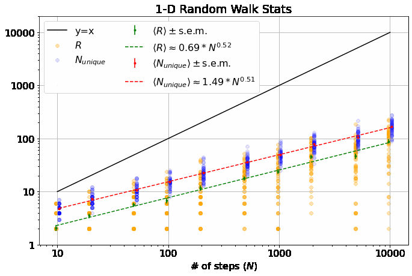
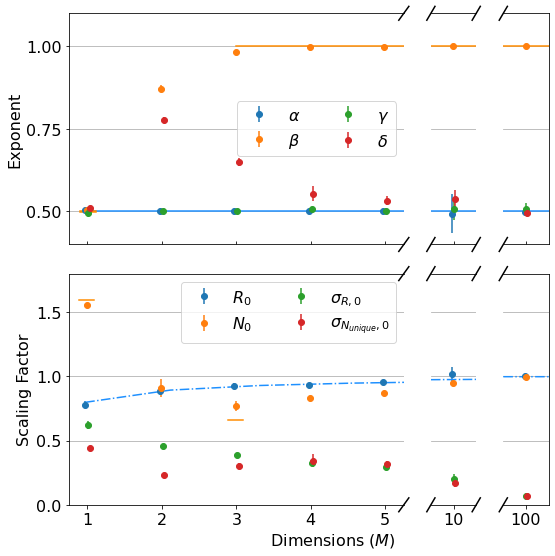

Here, we examine the statistics behind discrete random walks on square lattices in \(M\) dimensions, with focus on two metrics (see figure below for an example in 2-D): 1. \(R\), the final distance traveled from origin (measured by the Euclidean norm) and 2. \(N_{unique}\), the number of unique locations visited on the lattice.
We envision a single random walker on an \(M\)-D lattice and allow it to wander randomly throughout the lattice, taking \(N\) steps. We’ll examine how the distributions of \(R\) and \(N_{unique}\) vary with \(M\) and \(N\); we’ll show that their averages, \(\langle R \rangle\) and \(\langle N_{unique} \rangle\), and their standard deviations, \(\sigma_R\) and \(\sigma_{N_{unique}}\), scale as power laws with \(N\). The dependence of the exponents and scaling factors on \(M\) is interesting and can be only partially reconciled with theory.
A simple simulation of random walks is easy to write in python for arbitrary dimensions (see this colab notebook, github).
Here’s a look at the distribution of our two metrics for \(N = 1000\) for a few different dimensionalities:

Let’s make some high-level sense of these results:
-
\(\langle R \rangle\) depends only weakly on \(M\) while \(\langle N_{unique} \rangle\) clearly increases with \(M\). Both of these results make sense: In 1-D, the walker always has an equal chance to step further away from the origin or closer to it. It also always has at least a 50% chance of backtracking to a position it has already visited. As you add dimensions, it becomes less likely to step immediately closer or further from the origin and more likely to wander in an orthogonal direction, increasing the distance from the origin by roughly the same amount independent of which orthogonal direction, while also visiting completely new parts of the lattice.
-
In 1-D, if you take an even number of steps, \(R\) is always an even integer, so the distribution of \(R\) appears “stripe-y” above. \(R(M=1)\) can be understood as something like a folded normal distribution for large \(N\).
-
As \(M\) gets larger, the distribution of \(R\) tightens up. We are essentially taking \(M\) 1-D random walks, each with \(\sim N/M\) steps and adding the results in quadrature. The result of this is that our walker is less likely to be very close to the origin and simultaneously less likely to wander too far afield as it is more likely to have traveled a little bit in many orthogonal dimensions.
-
The width of the \(N_{unique}\) distribution, \(\sigma_{N_{unique}}\), depends in an interesting way on \(M\), increasing from 1-D to 2-D and thereafter decreasing. This seems because the distribution is centered most distant from the extremes of 0 or \(N\).
Let’s take a look at the means of our two metrics as a function of \(N\) for various \(M\) (apologies for using a gif here, but it helps with 1. keeping this post concise and 2. comparing the plots as \(M\) changes incrementally. If you prefer static images, I’ve included them at github):

Note, this is a log-log plot; power laws show up as straight lines. One of the first things you’ll notice is that the variation in dependence on \(N\) across different \(M\) is fairly banal for \(R\), but much more interesting for \(N_{unique}\). In fact, it is a well-known result (see, e.g., here) that \(\langle R \rangle \sim N^\alpha\) with \(\alpha = 0.5\) for all \(M\). \(\langle N_{unique} \rangle\), on the other hand, seems similar to \(\langle R \rangle\) in 1-D, but the dependence on \(N\) increases dramatically thereafter and approaches \(\langle N_{unique} \rangle \approx N^\beta\) with \(\beta=1\) at higher dimensions. If you look closely, you’ll note that 2-D is particularly special (more on that shortly).
We can also look at the widths (standard deviations) of the two distributions (again, you’ll note that 2-D is particularly interesting):

First, note that all 4 of the quantities describing the distributions of \(R\) and \(N_{unique}\) plotted above are well-described by power laws. Thus, we can extract eight parameters to describe them (four exponents and four scaling factors) as a function of \(M\):

I’ve plotted all the theoretical results that I could find for these parameters as lines above:
-
As mentioned, \(\alpha = 0.5\) for all \(M\). (blue line top plot)
-
\(R_0\) gives \(\langle R \rangle\) its weak dependence on \(M\), varying according to an elegant ratio of Gamma functions as described here. (blue dash-dot line bottom plot)
-
It has been shown that \(\beta = 0.5\) for \(M=1\) and \(\beta = 1\) for all \(M \geq 3\). (orange dash and line in the top plot) I found these theoretical results in this wonderful paper, which you should really glance at, if not read, just to see an interesting piece of history - it’s by George H. Vineyard in 1963 (no so long ago for such a fundamental math problem!) at Brookhaven National Lab for the US Atomic Energy Commission. Written on a typewriter, here is a sample equation, complete with hand-written scribbles to indicate the vectors and a clearly corrected typo on the first cosine:
- In the same paper, Vineyard derives that \(N_{unique, 0} = \sqrt{8/\pi}\) in 1-D and \(N_{unique, 0} \approx 0.659462670\) (yes with all those sig. figs.) in 3-D as derived from evaluating Watson’s Integrals (which, I take it, is what the integrals in the image above are called). (orange dashes in bottom plot)
The most interesting thing about all this, to me, is that there is no known theoretical result for \(\beta\) in 2-D. From our data, we get \(\beta = 0.87 \pm 0.02\). An interesting phenomenological argument for \(\beta\)’s dependence on \(M\): The random walker spends most of it’s time roaming around within a distance of \(\langle R \rangle \sim N^{\alpha}\) from the origin (where \(\alpha=1/2\), independent of \(M\)), as that is where it is going to end up. In 1-D, there are only \(\sim 2 N^{1/2}\) sites within this distance, so the number of unique sites visited scales with \(N^{1/2}\). In 3-D, there are \(\sim \frac{4}{3} \pi N^{3/2}\) sites in the sphere of radius \(N^{1/2}\), which is \(\gg N\), so the walker explores \(\sim N\) sites (as it can visit no more than it walks), similar for larger \(M\).
This is what makes 2-D random walks special: the number of sites within \(N^{1/2}\) distance of the origin is \(\sim N\), scaling as the number of steps taken - so, the scaling arguments above no longer apply, leaving us somewhere between \(1/2 < \beta < 1\).
A few final notes on the exponents and scaling factors that I don’t understand in terms of theory:
- We don’t get exactly \(\beta=1\) from the data in 3-D above, but that may be because some of our \(N\) are not quite large enough.
- I have not seen any theory for \(\sigma_{R,0}\), \(\sigma_{N_{unique},0}\), \(\gamma\), or \(\delta\).
- \(\gamma\) appears to also be independent of \(M\) at 0.5. Surely this isn’t hard to derive?
- \(\delta\) increases dramatically from 1-D to 2-D (again, 2-D appears the most interesting case) and slowly settles back down to 0.5 at large \(M\).
- \(\sigma_{N_{unique},0}\) has a strange effect for \(M=2\) also, dipping before going back up and then finally decaying towards zero for \(M>4\).
- For large \(M\), the data indicate that \(\sigma_{R,0} \approx \sigma_{N_{unique},0}\) and \(\gamma \approx \delta \approx 0.5\), indicating that \(\sigma_{R} \approx \sigma_{N_{unique}}\). Further, not shown here, but in github, \(\sigma_{R,0} \approx \sigma_{N_{unique},0} \sim \sqrt{1/M}\). Or, in total, \(\sigma_{R} \approx \sigma_{N_{unique}} \sim \sqrt{N/M}\) for large \(M\) and \(N\).
{kind=link}
I really enjoyed working on this post from end-to-end: writing the random walker class, finding a great python jackknife function from astropy (see the colab notebook), hacking my way through matplotlib, discovering the amazing Vineyard paper, and just generally exploring this incredibly rich problem that is so easy to state yet difficult to theoretically solve. I’ll also note that the 2-D results are of particular interest to me given their applicability to the World Wandering Dudes project that I have been working on.
 Dustin got a B.S in Engineering Physics from the Colorado School of Mines (Golden, CO) before moving to UC Santa Barbara for graduate school. There he became interested in Soft Condensed Matter Physics and Polymer Physics, studying the interaction between single DNA molecules and salt ions. After a brief postdoc at UC San Diego studying the physics of bacterial growth, Dustin decided to move into the data science business for good - he is now a Quantitative Analyst at Google in Mountain View.
Dustin got a B.S in Engineering Physics from the Colorado School of Mines (Golden, CO) before moving to UC Santa Barbara for graduate school. There he became interested in Soft Condensed Matter Physics and Polymer Physics, studying the interaction between single DNA molecules and salt ions. After a brief postdoc at UC San Diego studying the physics of bacterial growth, Dustin decided to move into the data science business for good - he is now a Quantitative Analyst at Google in Mountain View.